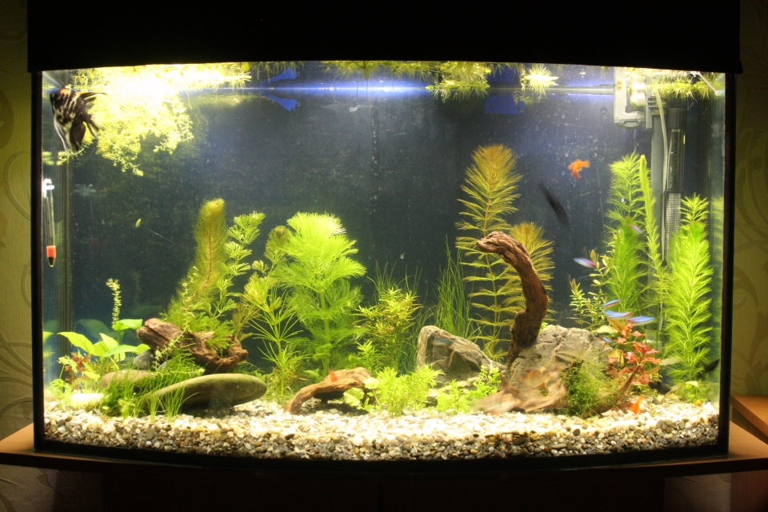

08.12.2017
І ось, коли вода стала більш прозора було помічено, що заднє скло банки бруднею. Перед тим як чіпляти фон та заливати воду я не звернув увагу на це. У перший день все робилося поспіхом і про то, що треба б, перед тим як чіпляти фон та заливати воду помити заднє скло не здогадався.
Прийшлося робити ризиковану операцію – відсовувати тумбу від стіни, знімати фон, мити скло, клеїти фон назад та ставити тумбу з аквою на місце. Але був у цьому щей позитив. Замінива фон на чорний. І дійсно, синій фон, це там де замки та підводні човни :) Добре, що ці маніпуляції не зашкодили конструкції банки – результат ось:
Ну і була зроблена перша спроба скейпу із наявних матеріалів. А ще були докуплені рослини у Бахмута. Як показав час, велика частина рослин, які я замовляв, а робив це я ще неодноразово не прижилися, а вижили багато з тих які Богдан додавав до замовлянь як бонуси – окреме дякую йому за це!